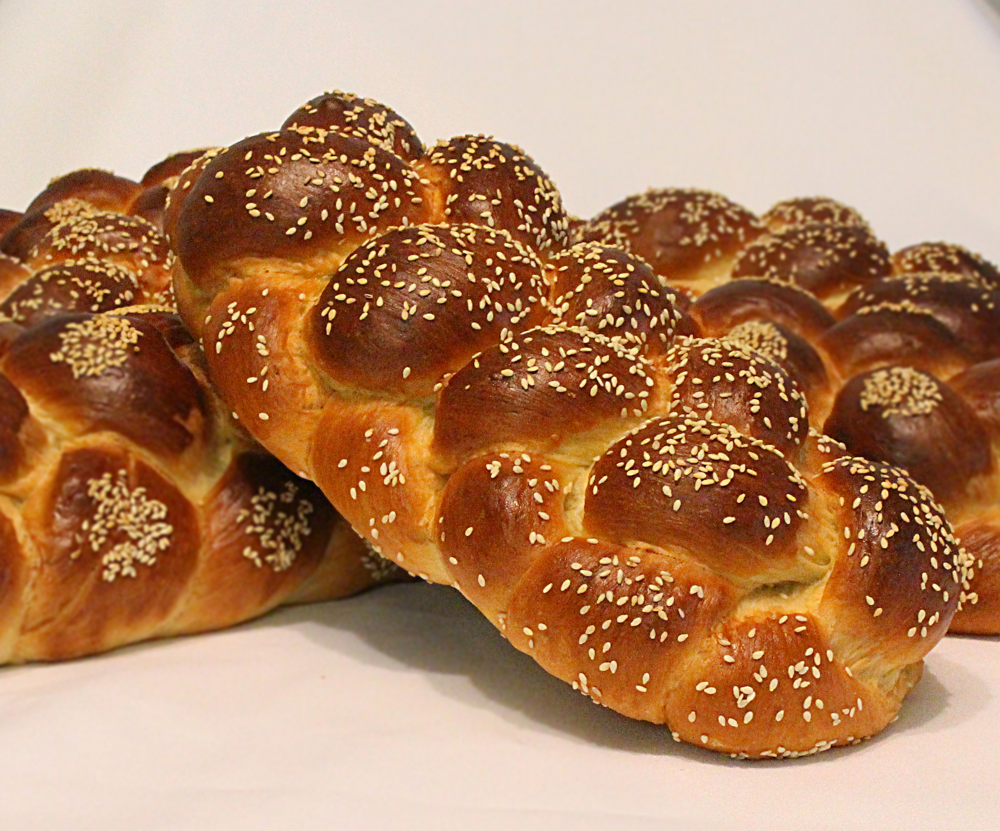

Challah Bread

What is Challah Bread?
Challa Bread is a Traditional Jewish Bread served on Sabbath and holidays.
It is ususally made from rich dough, i.e. yeasted dough enriched with butter, milk, eggs, and sugar.
Ingredients
- 500g White Flour
- 5g Dry Yeast
- 50g White Sugar
- 10g Salt
- 50g Beaten Egg (yolks and whites)
- 50g Unsalted softened Butter
- 250g Cold Milk
- Sesame seeds and Beaten egg for brushing
Steps
- Put all ingredients together in a mixer bowl and mix well on speeed 1 for 5 minutes. You should get a well integrated dough.
- Keep mixing another 5 minutes on speeed 2. Dough should become less sticky and take off easily from bowl's sides. Cover with plastic and put aside to rest for 30 minutes.
- After 30 minutes, wet your hands with water (helps keep dough from stickin' to your hands), take out dough from bowl onto your working surface. No need to dust with flour. Strech dough away from you as much as possible, just before it starts to tear. Then lift up stretched part and fold back over the rest of the dough. This stage is called 'A Fold'. Repeat folding from all 4 sides of your dough. Put dough back into bowl, cover with plastic and let rest for another 30 minutes.
- Repeat folding for another two times. Total = 3 folds. Leave dough to proof and rise on counter if baking in a couple of hours, or put in refrigerator for 12-24 hour for a long rise and a later bake.
- After rising, dough should be airy and light. Take it out from bowl onto your counter. Divide into two equal parts, and shape your challah as you like. There are plenty of tutorials on the net, just google it and find what's best for you.Here's a sample!
- Put shaped Challahs on a baking tray with a baking paper, cover with plastic and let proof for about an hour. Proofed dough should be very airy, yet still stable and holding it self. You don't want your Challah to overproof and start collapse, so keep an eye on it. It's better to stay a bit underproofed than otherwise, so stay alert.
- While proofing, warm up your oven to 200C.
- When done proofing, brush Challahs with beaten egg, throw over some sesame seeds, and bake for 20-24 minutes, untill it is nicely browned.
- Take out Challahs and chill on a cooling rack. Stay strong! It's better not to open it before it cools down, at least 30 minutes (if you can wait...)
Bon Apetit!!!